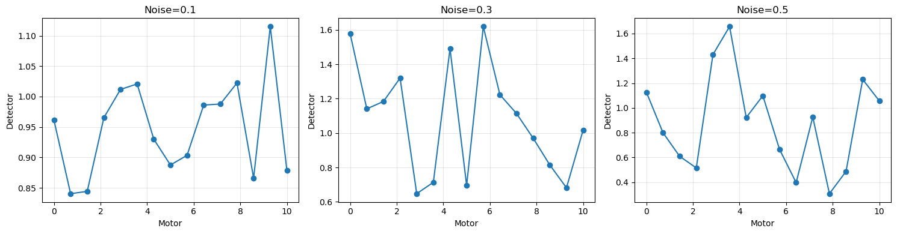

Practical Examples#
Complete working examples you can run and modify.
Example 1: Multi-Detector Scan#
import sys
from pathlib import Path
parent_dir = Path.cwd().parent if 'jupyter_book_tutorial' in str(Path.cwd()) else Path.cwd()
if str(parent_dir) not in sys.path:
sys.path.insert(0, str(parent_dir))
from bluesky import RunEngine
from ophyd import Signal
from bluesky.plans import scan
from bluesky_config.devices import MockDetector
from bluesky_config.callbacks import DocumentLogger
from databroker import Broker
# Setup
RE = RunEngine({})
doc_logger = DocumentLogger(str(parent_dir / 'data' / 'documents'))
RE.subscribe(doc_logger)
db = Broker.named('temp')
RE.subscribe(db.v1.insert)
# Create devices
motor = Signal(name='motor', value=0)
det1 = MockDetector(name='det1', noise_level=0.1)
det2 = MockDetector(name='det2', noise_level=0.2)
# Scan with TWO detectors
uid = RE(scan([det1, det2], motor, 0, 10, 20))
# View results
run = db[-1]
table = run.table()
print(f"Columns: {list(table.columns)}")
table[['motor', 'det1_value', 'det2_value']].head()
📝 Logging documents to: 3ac7d3f6_documents.jsonl
Saved stop document
Columns: ['time', 'det1_value', 'det2_value', 'motor']
| motor | det1_value | det2_value | |
|---|---|---|---|
| seq_num | |||
| 1 | 0.000000 | 1.011198 | 1.148916 |
| 2 | 0.526316 | 1.053167 | 1.093682 |
| 3 | 1.052632 | 1.023185 | 0.988153 |
| 4 | 1.578947 | 1.064635 | 1.119544 |
| 5 | 2.105263 | 1.115847 | 1.144408 |
Example 2: Batch Processing#
# Run 3 scans with different parameters
batch_uids = []
for noise in [0.1, 0.3, 0.5]:
det1.noise_level = noise
uid = RE(scan([det1], motor, 0, 10, 15))
batch_uids.append(uid[0])
print(f"Run {len(batch_uids)}: {uid[0][:8]} (noise={noise})")
print(f"\n✓ Completed {len(batch_uids)} batch runs")
📝 Logging documents to: 4f3e3c2e_documents.jsonl
Saved stop document
Run 1: 4f3e3c2e (noise=0.1)
📝 Logging documents to: 40886e12_documents.jsonl
Saved stop document
Run 2: 40886e12 (noise=0.3)
📝 Logging documents to: efa59649_documents.jsonl
Saved stop document
Run 3: efa59649 (noise=0.5)
✓ Completed 3 batch runs
Compare Batch Results#
import matplotlib.pyplot as plt
fig, axes = plt.subplots(1, 3, figsize=(15, 4))
for i, uid in enumerate(batch_uids):
run = db[uid]
table = run.table()
axes[i].plot(table['motor'], table['det1_value'], 'o-')
axes[i].set_title(f"Noise={[0.1, 0.3, 0.5][i]}")
axes[i].set_xlabel('Motor')
axes[i].set_ylabel('Detector')
axes[i].grid(True, alpha=0.3)
plt.tight_layout()
plt.show()

Example 3: Real-Time Peak Detection#
from bluesky_config.callbacks import PeakDetectorCallback
# Add peak detector callback
peak_detector = PeakDetectorCallback('det1_value', threshold=2.0)
RE.subscribe(peak_detector)
# Run scan
det1.noise_level = 0.4 # Higher noise for more peaks
uid = RE(scan([det1], motor, 0, 10, 30))
# Show detected peaks
print(f"\nDetected {len(peak_detector.peaks)} peaks:")
for motor_pos, det_val in peak_detector.peaks[:5]: # Show first 5
print(f" Motor={motor_pos:.2f}, Detector={det_val:.3f}")
📝 Logging documents to: 312d7056_documents.jsonl
🔍 Peak Detector: Monitoring 'det1_value'
Alert threshold: 2.0
Position signal: 'motor' (auto-detected)
Saved stop document
📊 Peak Summary:
Peak value: 1.8634
Peak position (motor): 3.4483e+00
---------------------------------------------------------------------------
AttributeError Traceback (most recent call last)
Cell In[4], line 12
9 uid = RE(scan([det1], motor, 0, 10, 30))
11 # Show detected peaks
---> 12 print(f"\nDetected {len(peak_detector.peaks)} peaks:")
13 for motor_pos, det_val in peak_detector.peaks[:5]: # Show first 5
14 print(f" Motor={motor_pos:.2f}, Detector={det_val:.3f}")
AttributeError: 'PeakDetectorCallback' object has no attribute 'peaks'
Try It Yourself#
Challenge 1: Scan with 3 detectors simultaneously
Challenge 2: Run 10 batch scans with noise from 0.1 to 1.0
Challenge 3: Create a custom plot comparing all batch runs
Next Steps#
→ Chapter 7: Troubleshooting